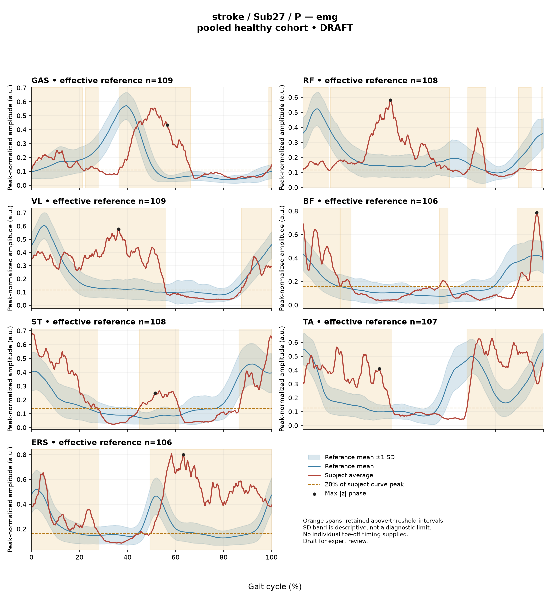

rater2 / Report 99 of 105 / Review spreadsheet row 100
R1D4B237475466B91
Case: stroke_Sub27_P
Read this report independently. Record judgments in the workbook. Browser pages do not save ratings.
Report: exact saved text
# Gait Report Interpretation — Sub27_P **Interpretation version:** limited-evidence-v3.1-candidate **Scope:** Research interpretation of a supplied quantitative summary. Not a diagnosis, not a treatment recommendation. --- ## 1. Objective Findings **Participant and side.** Sub27_P is recorded in the stroke group, and the data supplied are for the **paretic** side. The released cycle for this limb runs from one initial contact of that limb (0%) to the next initial contact (100%); these are two successive occurrences of the same boundary event, not a single instant. **No intermediate gait event (including toe-off) and no phase boundary are supplied in this input.** All timing below is therefore expressed as a percentage of the analysis cycle only, and no percentage here should be read as stance, swing, loading response, mid-stance or pre-swing. **Spatiotemporal values as supplied:** | Measure | Value | |---|---| | Gait speed | 0.75 m/s (band label: "limited community ambulator", 0.4–0.8 m/s) | | Cadence | 82.5 steps/min | | Step length symmetry index | −15.8% (successive-footfall definition) | | Composite kinematic deviation (GPS-like) | 6.81 | The ambulation label denotes a **speed band only**. It does not represent measured walking independence, safety, assistive-device use or real-world community mobility, none of which are supplied here. The symmetry index is negative, which under the stated formula means the **paretic step is shorter** than the non-paretic step by 15.8% of the mean step length. This value was computed with the successive-footfall definition (each heel at its own initial contact); the alternative instantaneous definition can yield a different value in some subjects, and that alternative value is not supplied. **Reference and comparability limit (applies to every comparison in this report).** The deviation reference actually used for this subject is a **pooled cohort of 138 healthy subjects** (1001 phase points, source: main_cohort_excel), pooling both body sides and all ages; it is not age-, sex- or speed-matched to this participant. This subject's speed of **0.75 m/s falls below the healthy cohort's self-selected speed floor of 0.80 m/s**, so no speed-matched healthy reference exists in this dataset for him. Any deviation reported below therefore **conflates slow-walking effects with stroke-related control changes, and these two cannot be separated from these data.** Deviation from an empirical reference is a statistical statement about distance from a non-matched comparison group; on its own it does not establish a disease effect, a specific impairment mechanism, or a clinical diagnosis. **Channels available and not available.** - Supplied: sagittal-plane kinematics for ankle, knee, hip and pelvis; averaged EMG envelopes for GAS, RF, VL, BF, ST, TA, ERS; two co-contraction indices. - **Not supplied in this input** (not the same as documented absent from the source release): coronal- and transverse-plane kinematics, individual toe-off and other gait events, matched muscle-specific normal timing references, non-paretic-side data, stride-level variability, raw-signal quality checks, expert plots, age, sex, time post-stroke, and stroke clinical scores. Nothing above should be described as missing from the source dataset — only as unavailable to this interpretation. - Pipeline note: the local array audit for this release verified 614 evaluable muscle/side combinations of 700, with 86 lacking valid nonzero paired samples. This is dataset-level context and is not a finding about this subject's channels. --- ## 2. EMG Envelope and Threshold Findings **How these numbers must be read.** The curves are **ensemble-averaged envelopes**, normalized to a participant-, side- and muscle-specific maximum shared across the available strides before averaging (in the checked stroke release the denominator is not shared between sides). Amplitudes are therefore **relative envelope values**, not absolute activation, force or strength; muscles must not be ranked as stronger or weaker from them. "Above-threshold intervals" are regions where the **averaged** envelope exceeds 20% of that same curve's own peak, with a minimum retained duration of 3% of the cycle. These are properties of the mean curve under that rule — they are **not** physiological onsets, offsets, contraction durations, or evidence of inactivity outside the retained intervals. They also do not demonstrate that the same pattern occurs in every individual stride. | Muscle | Retained interval(s) (% cycle) | Coverage | Peak norm. amp. | Max abs. z (location) | |---|---|---|---|---| | GAS | 22–28; 36–66; 99–21 (wraps) | 58% | 0.55 | 15.2 above reference, at 57% | | RF | 11–61; 69–76; 90–95; 99–11 (wraps) | 76% | 0.58 | 6.2 above reference, at 36% | | VL | 87–56 (wraps) | 69% | 0.58 | 6.4 above reference, at 36% | | BF | 16–20; 57–60; 89–15 (wraps) | 35% | 0.79 | 2.9 above reference, at 97% | | ST | 45–62; 86–28 (wraps) | 58% | 0.68 | 3.4 above reference, at 51% | | TA | 68–37 (wraps) | 69% | 0.63 | 5.9 above reference, at 32% | | ERS | 49–28 (wraps) | 81% | 0.81 | 8.2 above reference, at 63% | **Boundary continuity.** For all seven muscles the mean envelope remains above the 20%-of-own-peak threshold **across the 0%/100% cycle boundary**, i.e. across the initial-contact boundary of the released cycle. This is a continuity property of the averaged curve at that boundary; it does not by itself indicate sustained or continuous physiological contraction, and it is not assigned here to any gait-phase function such as weight acceptance, push-off or clearance. **Coverage.** Mean-envelope coverage ranges from 35% (BF) to 81% (ERS). Where coverage is below 100% and multiple intervals are retained, there are regions of the **averaged** curve that did not satisfy the threshold-plus-duration criteria — for example, the gaps between GAS's retained intervals. These regions are not established as electrically silent, and no claim of muscle inactivity is made. Conversely, for the single-wrapping-interval muscles (VL, TA, ERS) the supplied evidence does not establish the absence of any below-threshold segment beyond what the coverage figure itself implies. Anatomically, the recorded muscles include ankle plantarflexors (GAS), ankle dorsiflexors (TA), knee extensors (RF, VL), knee flexors/hip extensors (BF, ST) and trunk erector spinae (ERS). Naming these actions is permitted; mapping any specific interval to a functional gait task is not supported without the missing event and matched-timing data. Because no matched muscle-specific normal timing reference is supplied, **no interval here can be called normal, early, delayed or prolonged.** **Maximum |z| values.** Max |z| is the **largest standardized difference across all 1001 phase points**, i.e. an extreme-value statistic, not a single-observation z-score. In this dataset every one of 109 healthy controls exceeds |z| = 2 on at least one muscle, so the conventional 2-SD rule must not be applied. The supplied per-muscle healthy 95th percentiles for this statistic span **3.65 (ERS) to 4.61 (TA)**, and are higher still under leave-one-out; per-muscle percentiles for GAS, RF, VL, BF and ST are not supplied and are not invented here. Against the values that are supplied: GAS (15.2), ERS (8.2 vs its own 3.65), VL (6.4), RF (6.2) and TA (5.9 vs its own 4.61) all exceed the upper end of that stated percentile range; BF (2.9) and ST (3.4) fall below its lower end. "Above reference" in each row means the curve lies above the **phase-specific reference mean at that phase point**, not above a healthy percentile limit. The listed location is where the standardized difference is largest — it is **not** necessarily where the envelope reaches its peak amplitude, and it is not a gait event. These comparisons inherit the full comparability limit stated in Section 1 (pooled, unmatched, and below the reference speed floor), so they do not establish pathological muscle activity. **Co-contraction indices.** CCI is the Falconer–Winter index (2 × common area / summed areas) computed on the **full continuous normalized envelopes across the whole cycle**. It is not simultaneous activation time, not muscular force, and not a phase-specific result; it can be non-zero even where detected bursts do not overlap, because sub-threshold envelope area contributes. - **TA vs GAS = 0.40** — inside the supplied healthy interval 0.24–0.59 and close to the supplied median of 0.39. - **RF vs BF = 0.54** — inside the supplied healthy interval 0.48–0.83, and nearer its **lower endpoint (0.48)** than the supplied median of 0.68. Falling inside these intervals does **not** establish physiologically normal co-activation or normal muscle function; falling outside them would not establish pathological co-activation, spasticity, stiffness or impaired motor control. These values depend on the normalization and envelope-processing pipeline used here, and must not be compared with CCI values or thresholds from other studies or algorithms. --- ## 3. Kinematic and Reference Comparisons All kinematic values are **sagittal plane only**; coronal and transverse motion is not included in this input and cannot be commented on. | Channel | Sagittal ROM (deg) | Gait Variable Score | |---|---|---| | Ankle | 34.8 | 7.82 | | Knee | 59.2 | 9.04 | | Hip | 41.6 | 5.03 | | Pelvis | 7.8 | 4.16 | **Composite (GPS-like) = 6.81.** This is the RMS of the per-joint GVS values over the sagittal channels provided — it is **not** the validated 9-variable GPS. Relative to the supplied composite reference (median 5.1, 95th percentile 10.7), 6.81 lies **above the median and below the 95th percentile**. **Per-joint interpretation limits.** GVS is a summary root-mean-square difference from the reference mean waveform across the cycle. Within this subject's set, the knee GVS (9.04) is the largest and the pelvis GVS (4.16) the smallest, but **no per-joint healthy reference values are supplied**, so no individual GVS can be classified as within or outside normal limits. GVS and the composite score are magnitude summaries only: neither localizes the deviation to a phase of the cycle, nor indicates the direction of the waveform difference (for example, more flexion versus more extension). **ROM.** The ROM figures are descriptive. Without an appropriate matched comparison, ROM alone does not establish a clinical restriction, a contracture, or excessive motion at any joint. No such joint-level comparison is supplied here. **Comparability.** These kinematic comparisons use the pooled 138-subject reference described in Section 1 and inherit the same limits: the reference is not age-, sex- or side-matched, and this subject walks below its speed floor, so slow-walking effects and stroke-related changes cannot be disentangled. The pooled calibration percentiles quoted in this report are **not** matched leave-one-out normal limits, and a speed falling inside some overall range would not by itself prove that an appropriate matched reference exists. These same limits would apply if this participant were a control: neither group membership nor deviation magnitude, on its own, establishes normal physiology or disease. --- ## 4. Questions for Further Clinical Assessment These are open questions raised by the limits of the supplied summary. None presupposes that the mechanism or measurement issue in question has been observed, and none implies a management plan. 1. **Event timing.** Can individual toe-off and other gait events for this paretic cycle be retrieved from the release? Without them, no interval in Section 2 can be assigned to stance or swing, and the conventional 60% split must not be substituted. 2. **Matched reference.** Is a speed-matched (or speed-adjusted) and age-matched healthy reference obtainable, given that 0.75 m/s lies below the 0.80 m/s cohort floor? Would a leave-one-out or slow-walking comparison change the apparent magnitude of the EMG and kinematic deviations? 3. **Signal-level review.** Has raw-signal quality for the paretic channels — particularly GAS, whose max |z| of 15.2 is far above the other channels — been reviewed for artifact, electrode placement, cross-talk or baseline offset? This is a question, not an assertion that any such issue is present. 4. **Normalization dependence.** How sensitive are the retained intervals, coverage values and both CCIs to the 20%-of-own-peak threshold, the 3% duration rule, and the participant/side/muscle-specific normalization denominator? 5. **Stride-level behaviour.** Are individual stride envelopes available? The averaged curves supplied cannot support any statement about stride-to-stride consistency or variability of the observed pattern. 6. **Contralateral and out-of-plane data.** Are non-paretic-side EMG and kinematics, and coronal/transverse-plane kinematics, available for this participant? Both would materially change what the step-length asymmetry (−15.8%, paretic step shorter) and the sagittal-only composite score can be taken to mean. 7. **Step-length definition.** Would the instantaneous-heel definition yield a different symmetry value for this subject, and which definition is preferred for the intended comparison? 8. **Clinical context.** Are age, sex, time post-stroke and clinical scores available in the release for this participant, so that the quantitative summary can be placed alongside a clinical examination that this report does not substitute for?
Requirements for this report
Fill the corresponding Coverage rows in the workbook. G03 is included once. These are the approved requirements, not prefilled judgments.
| Excel row | ID | Required content | Components / optional content |
|---|---|---|---|
| 513 | R085 | Describe walking speed 0.75 m/s and that it is below the stated 0.80 m/s reference floor; no reference at this speed is supplied. | AND: displayed speed and that it lies below the 0.80 m/s reference floor, so no speed-supported healthy reference exists in this dataset. Optional: cadence, speed-band label (not a functional claim). One sentence may also serve the comparability half of G03. At 0.75 m/s, "just below the floor" is acceptable; the no-reference meaning must still be conveyed. |
| 514 | R086 | Identify knee AND ankle as the principal sagittal GVS differences. Exact ordering is optional. Exact GVS values are optional; identify the findings as reference-relative sagittal summary differences. | AND: knee AND ankle, no order. Stating which joint is larger is optional; asserting the reverse order is an error. Exact GVS values are optional; no waveform direction, phase or restriction is required. |
| 515 | R087 | Describe GAS envelope above its phase-specific reference mean at approximately 57% of the analysis cycle (displayed max |z| 15.2). Within each route, muscle identity AND mean-relative direction AND approximate cycle location are required. Exact max-|z| repetition is optional. | Required for each route: muscle identity AND direction relative to the phase-specific reference mean AND approximate cycle location. Optional: exact max |z| value, comparison with the supplied endpoint span (descriptive only). Prohibited: percentile classification, gait phase, physiological onset, severity. |
| 516 | R088 | Describe EITHER ERS envelope above its phase-specific reference mean at approximately 63% of the analysis cycle (displayed max |z| 8.2) OR RF envelope above its phase-specific reference mean at approximately 36% of the analysis cycle (displayed max |z| 6.2) OR VL envelope above its phase-specific reference mean at approximately 36% of the analysis cycle (displayed max |z| 6.4). One complete muscle-specific route is sufficient. Within each route, muscle identity AND mean-relative direction AND approximate cycle location are required. Exact max-|z| repetition is optional. | OR: one complete route suffices. Required for each route: muscle identity AND direction relative to the phase-specific reference mean AND approximate cycle location. Optional: exact max |z| value, comparison with the supplied endpoint span (descriptive only). Prohibited: percentile classification, gait phase, physiological onset, severity. |
| 517 | R090 | Describe the supplied successive-footfall step-length index -15.8% and its meaning: the paretic step is shorter. | AND: displayed index and the direction supported by its sign. Optional: formula, definition wording. Acceptable phrasing for small displayed values: "a small difference with the paretic step slightly shorter/longer" (not a cutoff). Prohibited: restating the index as a percentage shortening (E01), severity grades, whole-gait symmetry generalization (E07 issue, not an omission). |
| 518 | G03 | Express a meaningful limitation of reference comparability AND why the comparison cannot establish disease effects or clinical diagnosis; for controls it cannot establish disease or overall normality. One statement may also support a case requirement. | AND: comparability and inference limitations |
Exact model input: system instruction
Draft a research gait-report interpretation for a physical therapist or physiatrist using only the supplied quantitative summary. This is a limited-evidence interpretation task, not diagnosis or treatment selection. Rules: - Describe the participant's actual group and side, available findings, and missing channels accurately. Healthy-group membership does not prove normal physiology; deviations from an empirical reference do not by themselves establish disease. - Treat detected EMG intervals and coverage as properties of an averaged envelope under the stated threshold and duration rule. Do not convert them into physiological onset, offset, duration, continuous contraction, or inactivity outside the intervals. You may describe reported coverage, retained intervals and boundary continuity at the mean-envelope level. Do not infer the same pattern in every individual stride. Say no below-threshold segment only when the supplied evidence establishes that; a rounded coverage value or no retained interval alone does not establish it. - Individual toe-off and matched muscle-specific timing references are not supplied in this task. Use percentages of the analysis cycle. When the input explicitly identifies an initial-contact boundary, you may name that boundary or describe numerical proximity to it. Do not assign stance/swing, loading response, pre-swing, mid-stance or another event to a percentage, or substitute a conventional 60% split. Anatomical muscle actions may be named, but do not map an interval to a gait-phase function such as clearance, push-off or weight acceptance. Do not characterize timing as normal, early, delayed or prolonged without the required evidence. - Respect the supplied normalization method. Relative envelope amplitude is not strength or force, and average curves do not establish stride-to-stride variability. - Report CCI as a whole-cycle overlap index of normalized EMG envelopes. You may compare it with the supplied empirical interval or a supplied median, including proximity to an endpoint. Do not invent an unavailable median. Being within that interval does not establish physiologically normal co-activation or normal muscle function; being outside it does not establish pathological co-activation, stiffness, impaired control or a diagnosis. CCI is not simultaneous activation time, muscular force or a phase-specific result. It depends on normalization and envelope methods; do not transfer values or thresholds from other studies or algorithms. - Describe GVS and GPS-like as summary differences from the stated reference. Neither localizes waveform direction or phase; ROM alone does not establish a clinical restriction without an appropriate comparison. Do not treat pooled calibration percentiles as matched leave-one-out normal limits. - Where using a reference comparison, convey both limited comparability and the inability to establish a disease effect or clinical diagnosis from that comparison. One clear explanation per report is enough; age and speed need not be recited as separate checklist words. A speed inside an overall range does not prove that an appropriate matched reference exists. Apply these limits to controls as well. - The location of maximum |z| is the largest standardized difference from the reference, not necessarily the time of peak envelope amplitude or a gait event. Above/below reference in an EMG row means relative to the phase-specific reference mean at that location, not relative to a healthy percentile limit. - Preserve numerical direction and the displayed precision. Do not invent values, clinical severity grades, statistical significance, or unavailable reference values. Descriptive comparisons with supplied values remain allowed. Near-boundary rounded values do not justify classifying hidden unrounded values. - Clinical follow-up questions may ask whether a mechanism or measurement issue exists; do not presuppose it has already been observed. Do not recommend treatment. If EMG is unavailable, section 2 may simply state that envelope timing, amplitude and CCI cannot be assessed. Reference-only plots do not provide patient EMG. Use exactly these four sections: 1. Objective Findings 2. EMG Envelope and Threshold Findings 3. Kinematic and Reference Comparisons 4. Questions for Further Clinical Assessment
Exact model input: case summary
Candidate interpretation version: limited-evidence-v3.1-candidate
Draft the four-section report using only this subject's supplied evidence.
Metric definitions (read before interpreting any number below):
- All joint angles and ROM values are SAGITTAL PLANE only. Coronal/transverse data are not included.
- The released EMG curves are ensemble-averaged envelopes. For each participant and recorded muscle, normalization uses a shared maximum across the available strides before averaging; individual strides are not independently rescaled to their own peaks. This pipeline uses the released mean curves without further amplitude normalization. In the checked stroke release, the denominator is participant-, side-, and muscle-specific; it is not shared between sides. The local array audit verified 614 evaluable combinations, not all 700; 86 lacked valid nonzero paired samples. Amplitudes are relative envelope values, not absolute neural activation, force, or strength. Do not rank muscles as stronger or weaker from these amplitudes, or infer stride-to-stride variability from an average curve.
- Above-threshold intervals are the regions where the averaged envelope exceeds 20% of that curve's own peak, minimum retained interval 3% of the cycle (by sample count). An interval written as (X%-Y%) with X > Y wraps across the 100%->0% cycle boundary (envelope remains above threshold across the cycle-defining event). An onset of 0% is the analysis-window boundary, not necessarily a physiological onset. "No interval detected" means no region met the threshold + duration criteria; it does NOT mean the muscle is inactive or non-functional.
- CCI is the Falconer-Winter co-contraction index computed on the full continuous envelopes (2*common area / summed areas), so it can be non-zero even when the DETECTED burst intervals of the pair do not overlap (sub-threshold activity contributes).
- The composite kinematic deviation score is the RMS of the per-joint Gait Variable Scores over the sagittal channels provided ("GPS-like", not the validated 9-variable GPS).
- Step length symmetry index: 200*(paretic - non-paretic)/(paretic + non-paretic), in %. NEGATIVE means the paretic-side step is SHORTER. Two operational step-length definitions exist (successive-footfall: each heel's position at its own initial contact; instantaneous: both heels at the same instant) and give different values for some subjects -- the definition actually used is stated next to the symmetry value.
- "Max |z| deviation" is the LARGEST absolute z-score across all 1001 phase points of the cycle, comparing this curve to the healthy-cohort mean/SD at each phase. This is an extreme-value statistic, NOT a single-observation z-score: in this dataset every one of 109 healthy controls exceeds |z| = 2 on at least one muscle, and per-muscle healthy 95th percentiles for this statistic run 3.65 (ERS) to 4.61 (TA) -- higher still under leave-one-out. Do not label a value abnormal by the conventional 2-SD rule; use the healthy reference range given per muscle where provided.
- Healthy-cohort CCI reference (this dataset): RF-vs-BF median 0.68 (2.5th-97.5th pct 0.48-0.83); TA-vs-GAS median 0.39 (0.24-0.59). Composite score reference: median 5.1, 95th percentile 10.7.
- COHORT BACKGROUND (calibration context, not necessarily the exact reference used for this subject -- the actual reference composition is stated in a dedicated line with the subject data below): the full healthy cohort is 138 subjects for kinematics, effective n = 106-109 per muscle for EMG (29 controls have no usable EMG; completeness varies by age), pooling both body sides and all ages; it is not age- or speed-matched to this subject. A leave-one-out run uses one subject fewer than these counts.
- SPEED SUPPORT LIMIT (applies to most stroke subjects in this dataset): the healthy reference cohort's self-selected walking speeds span 0.80-1.79 m/s. If this subject's gait speed is below 0.80 m/s, NO speed-matched healthy reference exists in this dataset -- 41 of the 50 stroke subjects are below that floor. Deviations from the reference then conflate slow-walking effects with stroke-specific control changes, and the two cannot be separated from these data. Describe deviations from the reference as such; do not attribute them wholly to stroke pathology.
- Additional source fields are outside this input. Age, sex and gait events may be available in the release; time post-stroke, stroke clinical scores and a non-paretic-side designation apply only to the stroke cohort, as applicable. Do not claim every listed field exists for every participant. Distinguish not supplied, not applicable and documented absent recordings.
The released paretic-side cycle runs from initial contact of that limb at 0% to its next initial contact at 100%. The cycle boundary may be called initial contact; the endpoints are successive occurrences, not one instant. No intermediate event or phase boundary is supplied.
Model-visible information boundary: the summary contains mean-curve metrics and algorithm-detected intervals, not individual toe-off, matched normal muscle timing, stride-level variability, raw-signal quality checks, or expert plots. Information not supplied here must not be described as absent from the source dataset. Gait-cycle percentages alone do not identify gait phases.
Subject: Sub27_P (group: stroke, affected side: paretic)
Gait speed: 0.75 m/s (limited community ambulator (0.4-0.8 m/s)) [The ambulation label denotes a speed band only, not measured walking independence, safety or real-world community mobility.]
Cadence: 82.5 steps/min
Step length symmetry index: -15.8% (step-length definition: successive_footfall)
Composite kinematic deviation score (GPS-like): 6.81
Deviation reference actually used for this subject: 138 healthy subjects (pooled), 1001 phase points, source: main_cohort_excel.
EMG envelope findings:
- GAS: above-threshold interval(s) 22%-28%; 36%-66%; 99%-21% (wraps cycle boundary), 58% of cycle above threshold, above threshold across cycle boundary, peak normalized amplitude 0.55, max |z| vs healthy reference: 15.2 (above reference, at 57% of cycle)
- RF: above-threshold interval(s) 11%-61%; 69%-76%; 90%-95%; 99%-11% (wraps cycle boundary), 76% of cycle above threshold, above threshold across cycle boundary, peak normalized amplitude 0.58, max |z| vs healthy reference: 6.2 (above reference, at 36% of cycle)
- VL: above-threshold interval(s) 87%-56% (wraps cycle boundary), 69% of cycle above threshold, above threshold across cycle boundary, peak normalized amplitude 0.58, max |z| vs healthy reference: 6.4 (above reference, at 36% of cycle)
- BF: above-threshold interval(s) 16%-20%; 57%-60%; 89%-15% (wraps cycle boundary), 35% of cycle above threshold, above threshold across cycle boundary, peak normalized amplitude 0.79, max |z| vs healthy reference: 2.9 (above reference, at 97% of cycle)
- ST: above-threshold interval(s) 45%-62%; 86%-28% (wraps cycle boundary), 58% of cycle above threshold, above threshold across cycle boundary, peak normalized amplitude 0.68, max |z| vs healthy reference: 3.4 (above reference, at 51% of cycle)
- TA: above-threshold interval(s) 68%-37% (wraps cycle boundary), 69% of cycle above threshold, above threshold across cycle boundary, peak normalized amplitude 0.63, max |z| vs healthy reference: 5.9 (above reference, at 32% of cycle)
- ERS: above-threshold interval(s) 49%-28% (wraps cycle boundary), 81% of cycle above threshold, above threshold across cycle boundary, peak normalized amplitude 0.81, max |z| vs healthy reference: 8.2 (above reference, at 63% of cycle)
Co-contraction indices:
- TA_vs_GAS: CCI = 0.40
- RF_vs_BF: CCI = 0.54
Joint kinematic findings (sagittal plane):
- AnkleAngles: range of motion 34.8 deg, Gait Variable Score 7.82
- KneeAngles: range of motion 59.2 deg, Gait Variable Score 9.04
- HipAngles: range of motion 41.6 deg, Gait Variable Score 5.03
- PelvisAngles: range of motion 7.8 deg, Gait Variable Score 4.16Reference context for expert review
# Reference context: stroke/Sub27_P Mean/SD reference: 138 controls; method pooled; exclusions: []. Effective reference counts: GAS=109, RF=108, VL=109, BF=106, ST=108, TA=107, ERS=106, AnkleAngles=138, KneeAngles=138, HipAngles=138, PelvisAngles=138. The exact system and user input files define what the model receives. The EMG and kinematic plots are supplementary expert evidence, not model inputs. The plotted mean plus/minus one SD is descriptive, not a clinical normal band. Negative lower EMG bands can result from mean minus SD; they do not imply negative recorded EMG. The max-|z| p95 span in the input is pooled calibration context. Complete muscle-specific LOO thresholds are not supplied; an appropriately indeterminate classification is allowed. Controls are excluded from their own mean/SD reference, but cohort-level calibration has prior reference-data reuse. It is not an independent matched clinical limit. GPS-like is a four-channel sagittal composite, not the validated nine-variable GPS. The pooled median/p95 background is not a matched LOO normality boundary. CCI uses continuous normalized envelopes over the whole analysis cycle. An empirical interval comparison does not establish normal muscle function. Threshold intervals and rounded coverage describe the averaged envelope. Rounded 100% coverage and one interval do not prove absence of short below-threshold gaps. Use the group-specific cycle and normalization provenance in the actual input. No individual intermediate gait events or matched normal muscle timing are supplied. Administrative age and published bilateral speed are not added to this input. Expert-visible plots do not justify requiring unseen direction, phase or morphology. For a new-case requirement, cite exact input evidence. Select clinically useful descriptive content without inferring a diagnosis or severity from rank alone.
EMG and kinematic curves
The curves are supplementary expert evidence. Only the saved text inputs were supplied to the model; do not require curve-only observations.
EMG

Kinematics